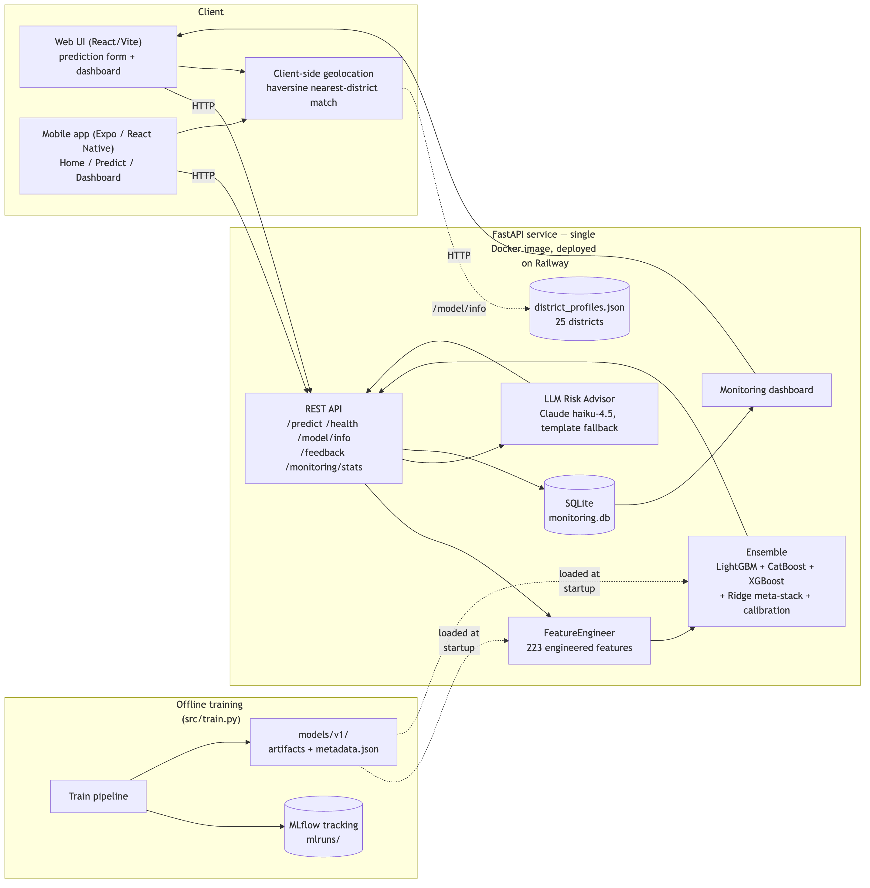

ML Opsidian: Genesis — Final Round Submission
June 2026
FloodGuard AI is an end-to-end MLOps system that turns the Initial Round flood-risk model for Sri Lanka into a deployed product. It packages a 223-feature, 3-model ensemble (the production evolution of the Initial Round's winning ideas) behind a FastAPI service that serves a prediction form, a REST API, an AI-generated risk report (Claude, with a deterministic fallback), and a live monitoring dashboard — all from a single Docker image deployed on Railway. A companion Expo / React Native mobile app (Android APK + Expo Go) talks to the same live backend and adds a geolocation-based "what's the risk where I am right now" preview on both clients.
This report covers Problem Understanding, System Architecture, the Machine Learning Approach (Initial Round summary and Final Round improvements), and MLOps Practices (deployment, monitoring, version control), per the Final Round deliverable requirements.
The underlying task, inherited from the Initial Round, is to predict a continuous
flood_risk_score in [0, 1] for locations across Sri Lanka's 25 districts,
given a synthetic dataset of 20,886 training records and 5,300 test records with
47 columns covering:
Models are scored with a custom metric that combines absolute and squared error with an explained-variance penalty:
score = (0.5 * MAE + 0.5 * RMSE) * (1 + max(0, 1 - explained_variance))
Lower is better. The (1 + max(0, 1 - EV)) term means a model that fits the
absolute level of the target well but fails to explain its variance (e.g. a
model that always predicts the mean) is penalized — both calibration and
discrimination matter.
The Final Round reframes this from "get the best leaderboard score" to: take that model and turn it into a usable, deployed, monitored system while keeping the Initial Round model as "a significant component" of the solution (Rule 1).
A few properties of the dataset shaped both the Initial Round model and how it had to be re-engineered for production:
The data is synthetic and noisy. The target correlates only moderately with any single feature; no individual column dominates. This is why the Initial Round's strongest models were ensembles of gradient-boosted trees with district-level aggregate features, not simple linear models.
district is the single most informative feature. Across every model
version, district target-encoding (district_te) is the top feature by
gain — by a wide margin (gain ≈ 5,345 vs. ≈ 2,340 for the next-ranked
feature in the Final Round model). Sri Lanka's flood risk is strongly
regional, so district-level statistics (mean/std/quantiles/ranks of rainfall,
elevation, drainage, etc.) are highly predictive.
Several numeric columns contain out-of-range/negative synthetic values
(e.g. ~100-125 rows each with negative rainfall_7d_mm, monthly_rainfall_mm,
distance_to_river_m out of 20,886). log1p() of a negative value is NaN
by definition — this is inherited, expected behavior, not a bug, and
LightGBM/CatBoost/XGBoost natively handle NaN as a "missing value" split
direction. src/data_validation.py flags (but does not reject) such values,
both at training time and per inference request (flag_out_of_distribution).
Calibration matters as much as discrimination. The Initial Round's best
submission had a predicted-score mean (0.4780) that matched the training
target mean (0.4780) almost exactly, while an earlier version (v9) was
~0.006 lower and scored worse on the custom metric — directly because of the
(1 + max(0, 1 - EV)) term's sensitivity to systematic bias. The Final Round
model explicitly computes and applies a mean-calibration shift as a final
post-processing step (§3.2).
A model trained for batch leaderboard scoring is not a model that can score
one new record on demand. The Initial Round pipeline computes district
statistics, KMeans clusters, KNN target-statistics, and target encodings
over the whole training set at once — fine for a CSV-in/CSV-out script, but
not directly usable for "a user fills out a form and gets one prediction back
in milliseconds." Re-architecting this into a fit/transform FeatureEngineer
that can be fit once and applied to a single new row was the central
engineering problem of the Final Round (§3.2).

Offline (training) path:
src/train.py loads data/train.csv, runs validate_training_data()
(src/data_validation.py) to sanity-check schema, nulls, and value ranges.FeatureEngineer.fit_transform() (src/features.py) builds the 223-column
feature matrix and fits and stores every stateful component needed to
transform a single future row the same way (district lookup tables, KMeans
models, a BallTree for KNN target statistics, target-encoding maps, and
empirical quantile mappings).train_target_mean - stacked_oof_mean) is computed
and will be added to every future prediction, then clipped to [0, 1].metadata.json artifact — is logged to MLflow (mlruns/)
for experiment tracking and run comparison.feature_engineer.joblib, the three model lists, the Ridge model,
and metadata.json) are saved to models/v1/.Online (serving) path:
frontend/src/lib/geo.ts runs a haversine nearest-neighbor match
against the 25 real district centroids in models/v1/district_profiles.json
(fetched once via GET /model/info) and renders a Live Risk Preview for
the user's own district using that district's typical conditions — entirely
client-side, with zero extra network round-trips. If permission is denied or
unavailable, the UI falls back to a fixed Galle example with a retry option.
See §2.3.app/main.py's lifespan loads a FloodRiskPredictor
(src/inference.py), which deserializes every artifact in models/v1/.POST /predict directly). The
request is validated against a pydantic schema (app/schemas.py).FeatureEngineer.transform() turns the single record into the same
223-column feature vector used in training — filling any optional fields
(composite indices, "current event" fields, *_qmap columns) using the
fitted defaults/mappings from training.[0, 1].src/data_validation.flag_out_of_distribution() checks the raw inputs
against expected ranges and attaches any warnings.src/llm_advisor.generate_risk_report() produces a
plain-language summary + recommendations (Claude, or a template fallback).app/monitoring.py) and the response returned to the client./monitoring/stats aggregates the SQLite log for the /dashboard page
(score distribution, category/district breakdowns, latency, user feedback).FloodGuard AI ships two clients against the same Railway backend, satisfying both the "Web Application" and "Mobile Application" tracks from a single API:
frontend/): React + Vite + TypeScript + Tailwind/shadcn-ui, built to
frontend/dist/ and served directly by the FastAPI app (app/main.py mounts
/assets via StaticFiles and serves index.html for any other path via a
catch-all SPA route) — same-origin, no CORS, one URL for the whole product.mobile/): Expo SDK 56 + expo-router (React Native), with Home,
Predict, and Dashboard screens mirroring the web app's functionality, built
with a more native interaction model (swipeable carousels, a multi-step
Predict wizard, segmented tabs on the Dashboard). It hardcodes the Railway
production URL as its API base, so it works on any network with zero
configuration. Distributed for the demo as a signed Android APK built via
eas build --platform android --profile preview (internal distribution —
installable directly, no Play Store review needed) and via Expo Go for
live development.Geolocation-based Live Risk Preview (new in the Final Round, no Initial Round
analogue): both clients call navigator.geolocation (web) / the Expo Location
API (mobile) on first load. scripts/build_district_profiles.py produced
models/v1/district_profiles.json — for each of Sri Lanka's 25 districts, a
real-world centroid (the Initial Round's latitude/longitude columns are
synthetic and uncorrelated with district, so real district-capital coordinates
were hardcoded) plus that district's typical rainfall, elevation, drainage,
land cover, and infrastructure values (the real per-district aggregates, which
are meaningfully correlated with district in the training data). The client
fetches this once via /model/info, does a haversine nearest-centroid match
against the user's coordinates, and immediately shows "here's the flood risk for
your area" — without waiting for the user to fill out the form. If location
permission is denied, both clients fall back to a fixed Galle example with a
retry button.
The Initial Round solution (solution_v10.py) was iterated through ten versions
(solution_v2.py … solution_v10.py), converging on:
ExtraTreesRegressor (Optuna-tuned).BallTree, target encoding for categorical
columns, label encoding, and interaction features (e.g. extreme-weather ×
terrain-roughness).This pipeline produced the team's best Initial Round submission (custom metric ≈ 0.383). It is powerful, but every one of its strengths is also why it cannot be served as-is: pseudo-labeling requires the entire test set up front; 10-fold × 3-seed training takes tens of minutes; and the district/KMeans/ KNN/target-encoding statistics are computed in one shot over the whole dataset, with no mechanism to apply them to a brand-new single row.
The Final Round model (src/train.py, src/features.py, src/inference.py,
version v1) is a restructuring, not a replacement, of the Initial Round
approach — Rule 1 ("the Initial Round work must remain a significant component")
is satisfied by carrying forward its exact feature-engineering philosophy and its
two highest-leverage ideas (ensemble + Ridge stacking, and mean calibration),
while making three changes that make it servable:
FeatureEngineer as a fit/transform/save/load object. Every
"compute over the whole dataset" step in v10 was rewritten as
fit on training data → store a small lookup/model artifact → apply to any
new row:| v10 (batch) | FloodGuard AI (FeatureEngineer) |
|---|---|
District stats computed via groupby over all rows |
Precomputed per-district lookup table, joined onto new rows |
KMeans fit and .predict() on the same data |
KMeans models fit once, saved, .predict() on the new row |
KNN target stats via BallTree over all rows |
Same BallTree, built once at fit time, queried per new row |
| Target encoding via K-fold OOF means | OOF means for training; full-train means for new rows |
*_qmap columns (no raw counterpart) |
Empirical monotonic map learned at fit time, np.interp at transform time |
Composite indices (seasonal_index, etc.) assumed present |
Default to the district mean (or global mean) if the user omits them |
The result is a 223-feature matrix that is column-for-column identical
whether produced for 20,886 training rows or for 1 new row submitted through
the API — verified by tests/test_features.py.
Reduced, fixed-hyperparameter ensemble. LightGBM-DART and ExtraTrees were dropped (in v10 they contributed marginal gain over LightGBM/CatBoost/XGBoost while roughly doubling artifact count and serialization complexity), 10-fold × 3-seed CV was reduced to 5-fold, and pseudo-labeling was dropped entirely (it is fundamentally a batch/test-set technique with no analogue for "score one new record"). Hyperparameters were fixed to sensible, previously-tuned values rather than re-running Optuna, trading a small amount of leaderboard score for a ~45-second, fully reproducible training run.
The same calibration step, computed and stored explicitly. src/train.py
computes calibration_shift = train_target_mean - stacked_oof_mean and
stores it in metadata.json; FloodRiskPredictor adds it to every prediction
and clips to [0, 1].
| Metric | LightGBM | CatBoost | XGBoost | Ridge-stacked | + Calibration |
|---|---|---|---|---|---|
| OOF custom metric | 0.4090 | 0.4072 | 0.4099 | 0.4071 | 0.4071 |
lgb=0.229, cat=0.713, xgb=0.134 — CatBoost dominates the
stack, consistent with it also having the best individual OOF score.district_te (5,345), inund_log1p (2,340),
distance_to_river_m (1,835), reason_has_flood (1,345), extreme_x_terrain
(1,303) — district_te remains the dominant feature, as in every prior
version.The 0.4071 OOF score is higher (worse) than the Initial Round's best 0.383, which is expected and accepted: that 0.383 came from a 5-model, 30-fold-equivalent, pseudo-labeled search not intended to run on every request. The Final Round's goal was not to win the leaderboard again, but to demonstrate that the same modeling ideas, re-engineered for single-record serving, remain competitive while becoming deployable — and the gap (0.383 → 0.407) is the documented, deliberate cost of that trade-off.
src/llm_advisor.py turns the score + top contributing features into a
plain-language summary and recommended actions via Claude
(claude-haiku-4-5), with a deterministic template fallback if
ANTHROPIC_API_KEY is not set — satisfying the "AI-powered product" track and
Rule 5's disclosure requirement.Dockerfile first builds the React
(Vite + TypeScript + shadcn/ui) frontend in a node:22-slim stage, then
copies the resulting frontend/dist/ build into a python:3.11-slim stage
that installs the minimal runtime dependency set (requirements-app.txt —
pandas, numpy, scikit-learn, lightgbm, catboost, xgboost, fastapi, uvicorn,
anthropic; the heavier dev/training dependencies — optuna, mlflow,
matplotlib, pytest — are kept in requirements.txt only) and copies src/,
app/, and the trained models/v1/ artifacts into the image.
.dockerignore excludes the dataset, MLflow store, virtualenv,
frontend/node_modules/frontend/dist, and tests from the build context.uvicorn app.main:app serves both the REST API and the
built React frontend (frontend/dist/) from one process, with a catch-all
route so client-side routing (/predict, /dashboard) works on full page
loads and refreshes.floodguard
service, sfo region), built directly from the Dockerfile via
railway up, with /health as the readiness check and an optional
ANTHROPIC_API_KEY environment variable. render.yaml is kept as a
documented alternative — Render builds the same Dockerfile with no separate
build step or artifact registry, since models/v1/ ships inside the image./ (landing page), /predict
(prediction form), and /dashboard (monitoring dashboard), so judges reach
the full product through one URL with no extra setup, per the "Deployment
Link" requirement.mobile/) is built into a standalone,
installable Android APK via EAS Build (eas build --platform android
--profile preview, eas.json configures internal distribution + apk
build type). The APK already points at the Railway URL, so installing it on
any Android device gives judges the full mobile experience with no dev server
or network configuration — satisfying the "Mobile app demo" deployment-link
option.POST /predict call writes a row to a local
SQLite database (app/monitoring.py) — full input JSON, output score and risk
category, model version, latency in milliseconds, and the number of
out-of-distribution flags raised.app/main.py wraps the prediction path in a
try/except that returns a 400 with the error detail rather than a bare
500, so client-side errors (e.g. malformed input that slips past pydantic)
are visible and debuggable rather than silent.GET /monitoring/stats aggregates total
predictions, average score, average latency, a 10-bin score histogram,
risk-category counts, and per-district counts (top 10) — rendered as charts on
/dashboard (Chart.js), refreshed automatically every 15 seconds.POST /feedback lets a user report whether a
flood actually occurred and rate the prediction 1–5; feedback counts and
average rating are surfaced on the dashboard alongside prediction metrics.src/data_validation.flag_out_of_distribution()
compares each request's raw inputs against the training data's expected
ranges (NUMERIC_BOUNDS) and returns human-readable flags, both in the API
response (shown to the end user) and in the monitoring log (so an operator can
see if incoming traffic is drifting from the training distribution).flood-guard-ai/) with a .gitignore excluding the
virtualenv, caches, training-run logs (catboost_info/), and the runtime
SQLite database (*.db) — but including data/ (the training/test
CSVs), models/v1/ (the deployed artifacts, ~14 MB), and mlruns/ (the
MLflow tracking store, ~300 KB), so the repository is self-contained: cloning
it and running uvicorn app.main:app serves the exact model described in this
report with no separate data or artifact download step.src/config.MODEL_VERSION = "v1" determines
models/v1/; a future retraining run that changes the feature set or
hyperparameters would be saved as models/v2/ alongside v1, with
metadata.json in each directory recording the training timestamp, metrics,
feature count, and Ridge weights for direct comparison.python -m src.train run creates a new MLflow
run under the flood-risk-production experiment (mlruns/), logging all
hyperparameters and the full metric set (per-fold, OOF per-model, stacked, and
calibrated). mlflow ui --backend-store-uri ./mlruns gives a local UI for
comparing runs..github/workflows/ci.yml, bonus deliverable): on every push/PR to
main, GitHub Actions installs dependencies, runs the full pytest suite
(feature-pipeline shape/dtype tests, inference sanity tests, and API tests via
FastAPI's TestClient), and then builds the Docker image — so a broken feature
pipeline, a broken model artifact, or a broken Dockerfile is caught before
deployment.FloodGuard AI demonstrates that the Initial Round's core modeling ideas — a gradient-boosted ensemble with Ridge meta-stacking and mean calibration, built on a rich district/geo/interaction feature set — can be re-engineered into a deployable, monitored, single-record-serving system without abandoning what made the original model competitive.
Future improvements (also covered in the presentation):
models/v2/, v3/, … and compared via the MLflow run history.flag_out_of_distribution counts against a baseline) surfaced on the
dashboard.